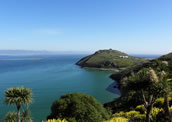

Dunedin and Otago Peninsula
With a population of around 120,000 people, the port City of Dunedin is the South Island's second largest. Famous for being a University city of Scottish heritage, Dunedin offers a delightful combination of fine Architecture and cultural riches.
While visiting Dunedin, make sure you don't miss a trip to the picturesque Otago Peninsula. Stretching nearly 20 km from the city, the Peninsula is home to many of New Zealand's most treasured bird and sea life including the Yellow - eyed Penguin, fur Seals and the Royal Albatross. Along with the wild life, there are great walks that take you to many beautiful beaches situated along the Peninsula's rugged coastline.